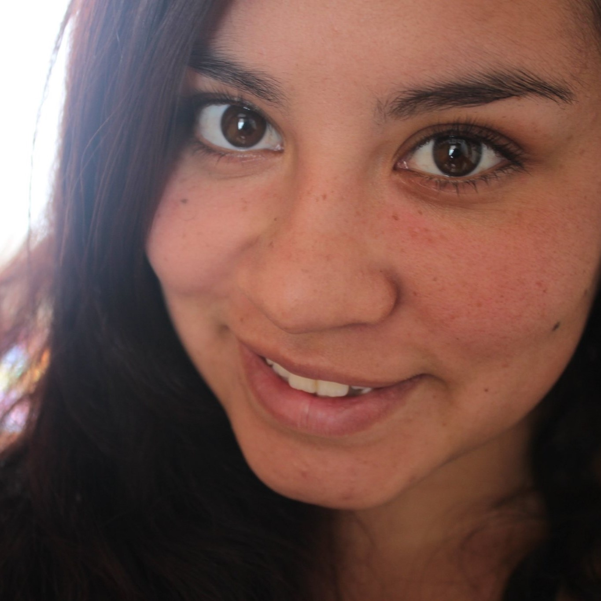

Sobre mi
Soy una persona que aprende rápido, me gusta enfrentar nuevos retos y siempre busco maneras creativas de resolver problemas. Disfruto mucho trabajar en equipo porque creo que las buenas ideas crecen más cuando se comparten, y me considero alguien comprometida y responsable con las metas que me propongo.
En 2021 di mi primer paso en el mundo del Desarrollo, comenzando con un curso básico que despertó en mí el interés por la tecnología y el diseño de soluciones digitales. Ese mismo año, en julio, tuve la oportunidad de trabajar en Laika, una empresa de productos para mascotas, donde estuve hasta diciembre de 2022. Fue una experiencia muy valiosa que me enseñó sobre trabajo en equipo y compromiso.
Aunque llevo casi tres años sin trabajo formal, no me he detenido. He seguido formándome, haciendo cursos y estudiando de forma constante para fortalecer mis conocimientos en desarrollo web y programación, con la meta de regresar pronto al mundo laboral, esta vez en el campo que me apasiona. Estoy convencida de que cada aprendizaje suma y que el esfuerzo constante abre nuevas oportunidades.